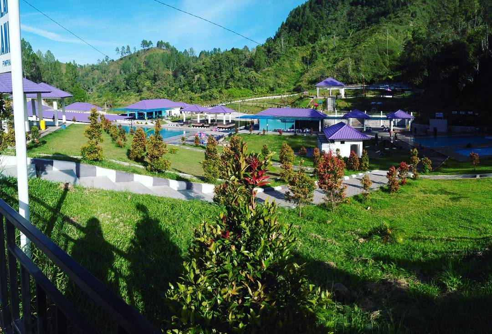

Bukit Gibeon

Banyak wisata alam dengan menawarkan panorama indah perbukitan yang bisa dinikmati oleh para wisatawan yang datang, seperti halnya Danau Toba yang merupakan Danau terbesar di Asia. Selain Danau Toba, Sumatera Utara juga punya tempat wisata lain yang baru-baru ini ramai dibicarakan di media sosial. Apalagi kalau bukan wisata alam Bukit GibeonSibisa.wisata Bukit Gibeon ini, Anda juga akan menjumpai berbagai fasilitas yang melengkapinya seperti, rumah doa, gereja, menara doa, ruang penginapan, ruang belajar, aula, fasilitas api unggun, sekretariat, fasilitas ibadah padang, halaman parkir, ruang terbuka, dapur dan kolam renang.Bukit Gibeon Sibisa lokasinya tak jauh kok dari wisata Danau Toba, hanya berjarak sekitar 3 km saja. Tepatnya terdapat di Parsaoran Sibisa, Ajibata, Sionggang Utara, Lumban Julu, Kabupaten Toba Samosir, Sumatera Utara.Wisata ini cukup banyak peminatnya dari masyarakat umum, jadi untuk bisa masuk kawasan ini dikenai biaya masuk sebesar Rp 10.000/orang. Selain itu, pengunjung juga dikenai biaya parkir seharga Rp 2.000.